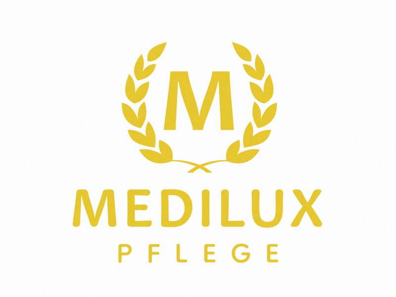
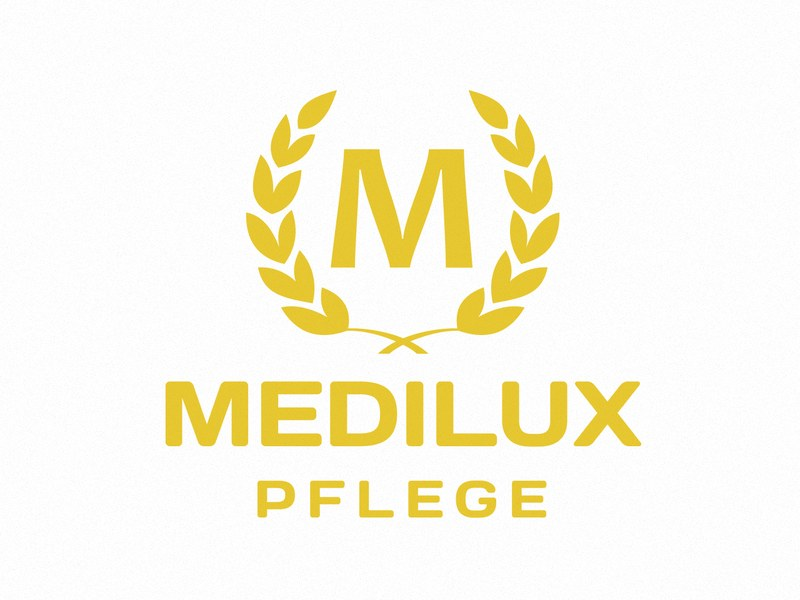
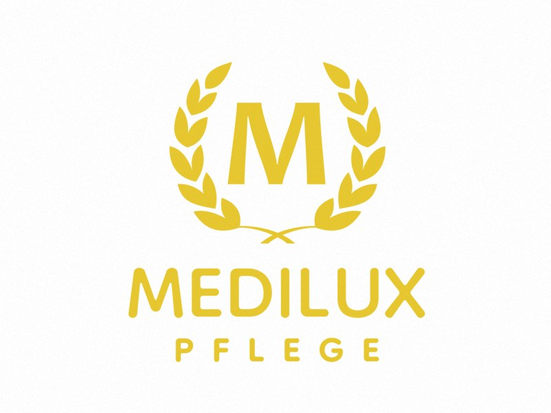
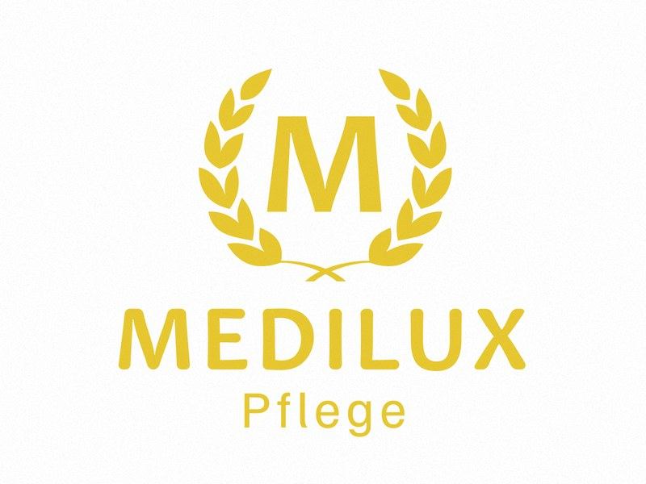
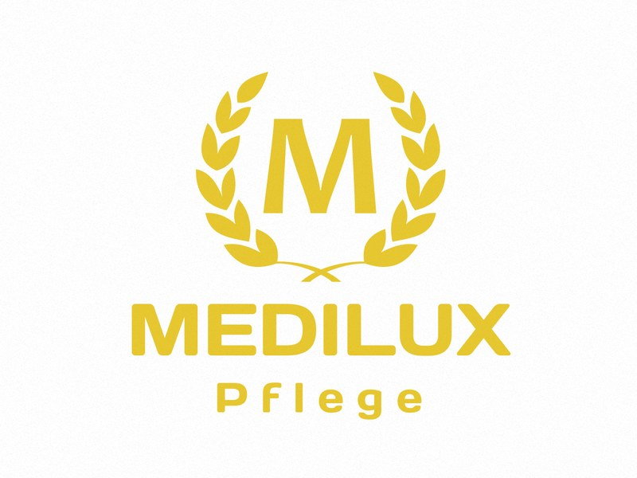
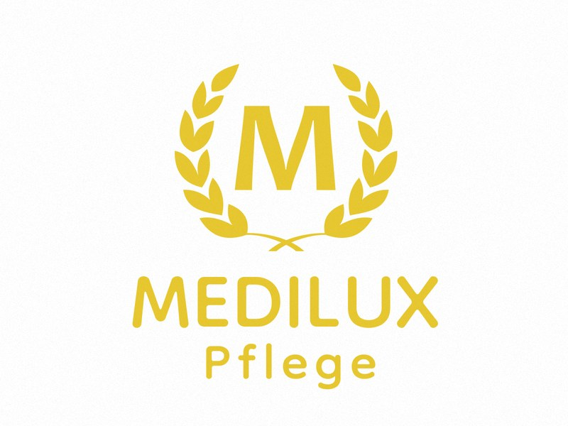
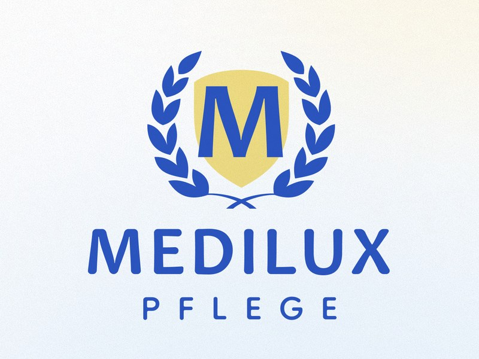
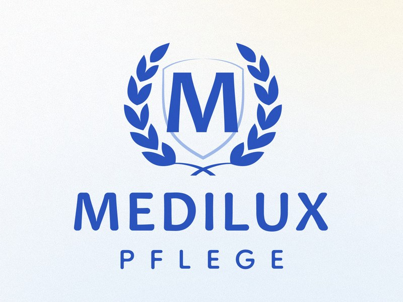

Ihr Logo mit «Pflege»: alle Varianten zur Auswahl
Sie hatten sich gewünscht: eine etwas rundere Schrift, das Wort «Pflege» unter MEDILUX, Farbe und Kranz bleiben. Hier sind alle Varianten unseres Designers, jeweils mit unseren Hinweisen. Bitte nennen Sie uns am Ende einfach die Nummer Ihres Favoriten.
- Varianten 1 bis 9 ansehen
- In der Live-Vorschau auf dem Handy durchscrollen
- Uns die Nummer nennen
Zum Vergleich: das Logo heute
So steht das Logo im Moment im Kopf der neuen Website. Kranz und Gelb bleiben in den Varianten 1 bis 6 genau so.
Varianten 1 bis 3: «PFLEGE» in Großbuchstaben



Varianten 4 bis 6: «Pflege» klein geschrieben



Varianten 7 bis 9: Vorschlag in Blau


Live-Vorschau: so wirkt das Logo auf dem Handy
Scrollen Sie in der Handy-Vorschau nach unten. Oben steht das ganze Logo auf dem Bild. Sobald Sie scrollen, wird der Kopf weiß und bleibt stehen.
Variante
Kopf beim Scrollen
Farbe im Kopf beim Scrollen
Bei den Varianten 7 bis 9 steht oben auf dem dunklen Bild das gelbe Logo, beim Scrollen im weißen Kopf die blaue Fassung mit Wappen. So hat unser Designer es gedacht: Gelb wirkt auf dem Bild, Blau auf Weiß. Die Farbwahl gilt deshalb nur für die Varianten 1 bis 6.
MEDILUX bietet Senioren ein Zuhause mit liebevoller Pflege rund um die Uhr und Angehörigen die Sicherheit einer verlässlichen Versorgung – als Alternative zum Pflegeheim, an zwei Standorten in Berlin.
Villa Lindenthal
In der Villa Lindenthal in Zehlendorf leben bis zu 28 Bewohner in drei Pflege-Wohngemeinschaften: familiär, in einem stilvollen Haus mit Garten.Residenz Heerstraße
Die Residenz Heerstraße in Spandau bietet 24 Pflege-WG-Plätze in Einzelzimmern und 42 betreute Wohnungen in einem modernen Neubau.Für wen?
Für Senioren, für Angehörige und für Sozialdienste, Berufsbetreuer, Ärzte und Pflegeberater.Kosten
Was ein Platz kostet und wer die Kosten trägt, rechnen Sie mit dem Kostenrechner auf der Seite «Kosten» aus.(Vorschau – Texte von der Startseite der neuen Website)
Ihre Auswahl
Schreiben Sie uns einfach die Nummer Ihres Favoriten (1 bis 9) und, wenn Sie möchten, ob Ihnen im Kopf beim Scrollen Gelb oder Blau lieber ist. Per WhatsApp oder E-Mail, wie es Ihnen passt.
Beispiel: «Variante 1, beim Scrollen Blau»